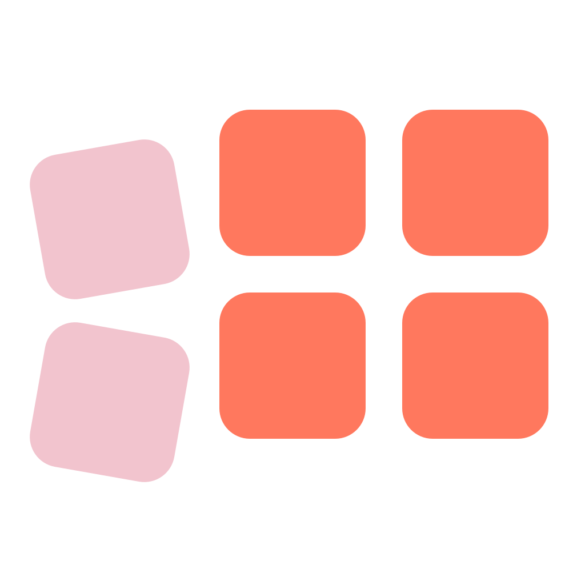
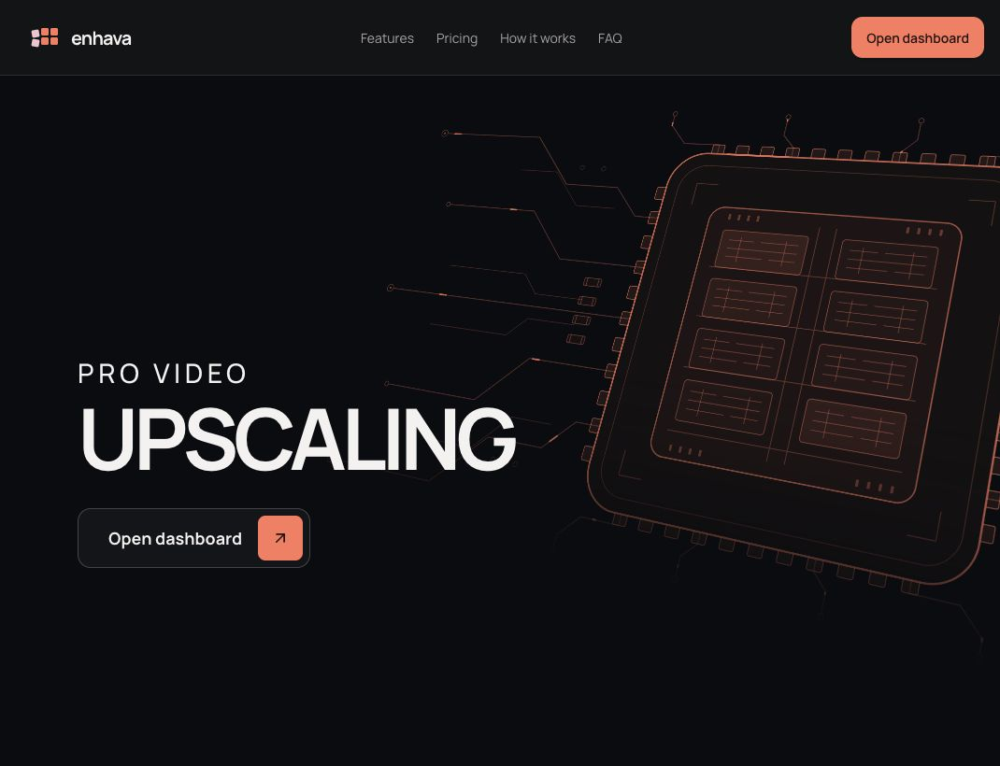
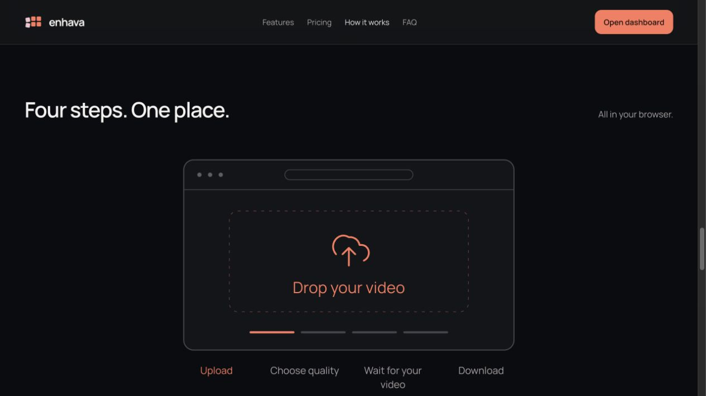

Coordinate
The backend provisions on-demand Vast.ai workers and routes video-processing jobs to them.
Personal project · In development · June 2026–present

Turning a capable video-enhancement model into a service people can use without managing GPUs or model deployment.
A video-upscaling model is only one part of a usable product. Someone who wants to improve footage should not have to provision a GPU, install model weights or work out how to recover a failed processing run.
I built Enhava around the pretrained SeedVR2 model to make that process accessible through a browser. The product focuses on a simple journey: upload a video, choose the quality, see a processing quote, track progress and download the result.

My contribution is the service around the model: the Python backend, on-demand GPU orchestration, runtime and cost estimation, and the interface connecting those steps. I built the TypeScript/React frontend through agent pipelines I designed in Codex.

Rented GPU workers can disconnect or stop responding. I designed the processing workflow to detect these problems and recover interrupted jobs, instead of treating every failure as a reason for the user to start again.
The backend provisions on-demand Vast.ai workers and routes video-processing jobs to them.
Heartbeats track worker health. Bounded retries and saved checkpoints support recovery from interrupted processing.
The workflow checks outputs before making the completed footage available for download.
I compared GPU configurations and built a runtime and cost estimator using measured processing rates. It accounts for output resolution and memory-aware frame batching and video chunking, helping connect a user’s quality choice to a processing quote.
I built calibration into the estimator for 12 GPU classes. Provider availability, workload and configuration affect cost and processing time, so I treat a quote as an estimate rather than a universal performance promise.
SeedVR2 provides the pretrained video-enhancement model. My work centres on the product and the infrastructure that makes it accessible to users.
The project has made me think about reliability, cost and interface design together. A technically capable model becomes much more useful when the surrounding system makes it straightforward to run and understand.
The service remains in development. Screenshots were captured from the live website in October 2026. Product information: Enhava and its SeedVR2 overview.